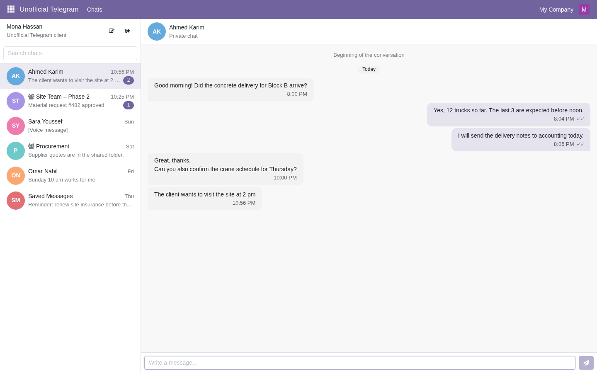
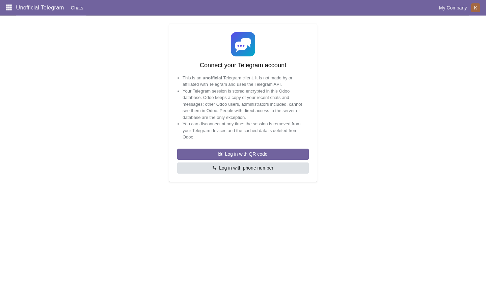
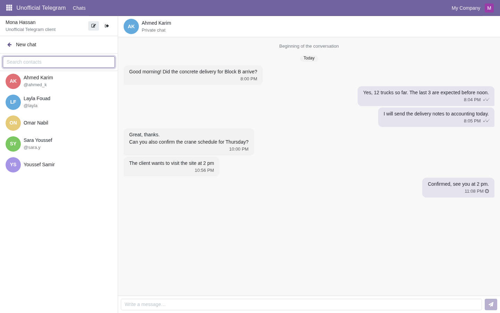
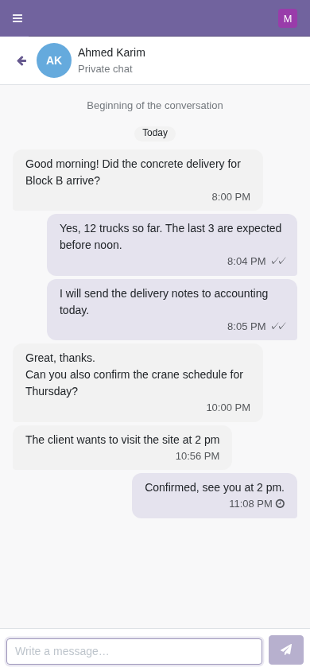
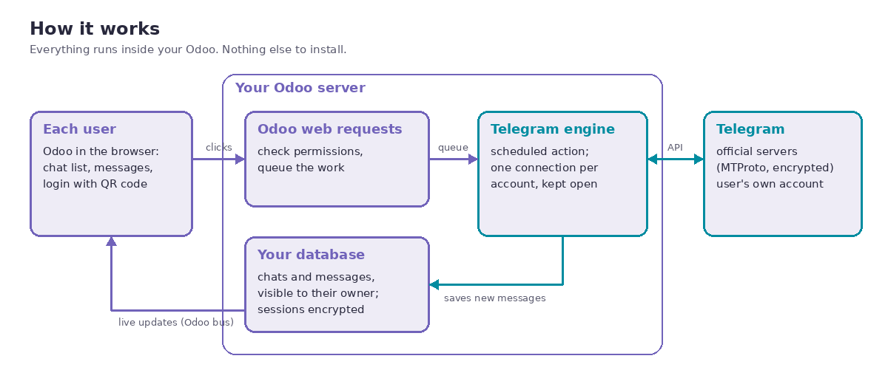
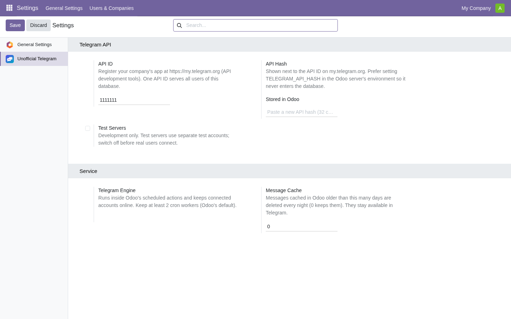

Unofficial client. This app is not made by or affiliated with Telegram. It uses the Telegram API to connect each user's own Telegram account.


Each user connects their own account

Start chats from your Telegram contacts

Works on phones too

No message passes through any third-party server: only your Odoo and Telegram.
TELEGRAM_SESSION_KEY on your Odoo server and a copy of the database alone cannot open them. Database copies made by Odoo's tools, and neutralized staging databases, drop the sessions.As with any business application, people with direct access to your server or database are outside of Odoo's permission system.
Telegram watches accounts that use third-party apps. This app is built to look like a person using Telegram Desktop:
TELEGRAM_SESSION_KEY in the server environment.
Paid app, sold as a one-time purchase on the Odoo Apps Store (one price per Odoo version, no per-user fees). No subscription, no advertising, no data collection, no per-message fees.